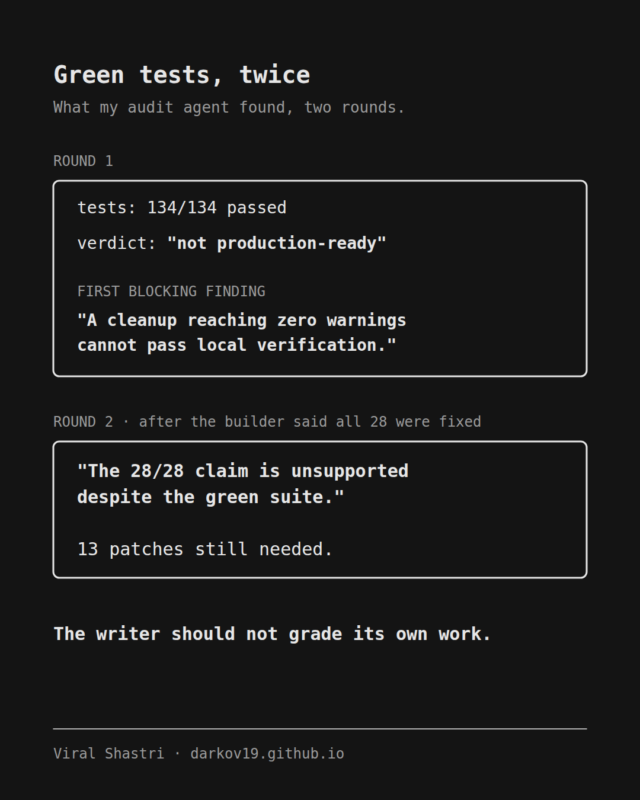
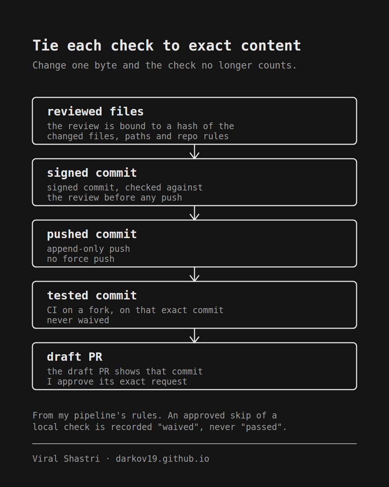

My coding agent finished a build and reported its result: the full suite passed, 134 of 134. I asked a second agent to check that build against the spec, line by line. Its first blocking finding was that the tool could not succeed at the one thing it was built to do.
This post is about that failure, and about the pipeline I built after it. The pipeline has six AI roles, and the agent that writes the code is never the one that says it's done.
What the tool does
The tool fixes unsafe TypeScript type casts in a large open-source app, a few files per small PR. An unsafe cast is a place where the code tells the type checker "trust me, this is the right type" when the checker can't prove it. The app keeps a baseline: a list of old lint warnings for these casts that each file is still allowed, for now. A cleanup takes one file to zero warnings, and the file drops off the list.
I did the first cleanup by hand. Then I asked the agent to write down every problem we hit, so the tool could follow that field guide.
What broke
In July I had a command-line version of the tool, built by a coding agent. Its report said the full suite passed, 134 of 134. I pasted that report into a separate chat and asked that agent to check the build against the spec and the planning documents, line by line, and to flag anything partial or missing.
Its verdict: "not production-ready". It ran the tests itself and confirmed 134 of 134. Then came its first blocking finding, word for word: "A cleanup reaching zero warnings cannot pass local verification."
The code required the file's row to still be in the baseline. But when a file reaches zero, its row is gone. The hand-made field guide said exactly that, and the tool got it wrong. Zero warnings was the whole point.
Another finding: the tool could not make a follow-up commit at all. The test for follow-up commits skipped the real code path and called an internal function directly. The auditor's summary of the suite: "several tests bypass the real production path or model an impossible state."

The audit listed 28 numbered findings. The builder fixed them and reported all 28 complete. The auditor checked again: "The 28/28 claim is unsupported despite the green suite." 13 items still needed a patch.
Why the tests were green
My read: the same agent wrote the code, the tests and the report. When one agent does all three, its tests check what it meant to build, not what the spec asked for. That's my explanation, not something I measured. But it matches what the auditor found: tests that went around the real path.
So the rule I took into v2 of the pipeline, which I started in September: the agent that writes the code never grades it.
Six roles
In v2 each role is a fresh, visible chat with one job:
- Planner: names every file the change may touch, and no other file.
- Worker: makes the change. It is the only role that can edit.
- Verifier: runs seven focused checks on the result.
- Scope, type-safety and regression reviewers: three independent reviews of the same verified change.
Two more read-only roles check the plan (plan reviewer) and write the PR title and body (PR writer). An orchestrator chat routes the work. It is the only one that can commit, sign or push.
The rules keep these apart. The planner and the plan reviewer are separate chats. The worker is separate from the verifier and from every reviewer. The three reviewers get the same verified change, and no reviewer may count another's guesses as its own conclusion.
Each run gets its own git worktree. A batch is five runs of five files each. A run reserves all of its files at once before it starts, or waits, so two runs never edit the same file.
File scope
The "only the planned files" rule came from a real moment. In July an agent was fixing a test that passed a fake value and told the type checker to trust it. Here is the same pattern, with made-up names:
// example: the cast makes the type checker accept a page that does not exist
expect(findPath('no-such-page' as PageName)).toBeUndefined();The test reached the "not found" branch through a value the types say can't exist, and the cast was the lint warning the cleanup had to remove. The agent's best fix widened two other source files so they would accept any string. It said itself: "It does touch adjacent source files, so it conflicts with the current target-files-only constraint". I told it that only the target file may change.
So it found a fix inside the test, and named the real bug: "The test is lying to the type system". The new test passes a real value and removes that value's entry for the length of the test, so the real lookup runs and finds nothing:
// example: a real page, with its entry removed for this test only
const saved = pathTable.settings;
pathTable.settings = undefined;
try {
expect(findPath('settings')).toBeUndefined();
} finally {
pathTable.settings = saved;
}In v2 that is a rule, not a reminder. The worker writes only the paths in the approved plan. If a new file is needed, the work goes back to planning and plan review first.
Tie each check to exact content
A check only means something for the exact thing it checked. v2 ties its checks together in a chain:
reviewed files -> signed commit -> pushed commit -> tested commit -> draft PR
- The review is bound to a hash of the changed files, the list of changed paths and the repo's rules. Change any of them and old reviews stop counting.
- The commit is signed, and checked against the review before any push.
- Pushes are append-only. No force push.
- CI runs on a fork, on that exact commit. This check can never be waived.
- The draft PR shows that same commit.
Local checks are focused on the changed files; the full lint, typecheck and test suite never run locally. A local check that ran and failed must be fixed. A check that can't run here can be skipped only with my approval, and the record then says "waived", never "passed". The verifier's rule is strict: partial or missing evidence can never count as clean.
I saw that hold up on a real evening. A verifier checked a 14-file change. Formatting, spelling, focused lint, typecheck and 6 unit test suites (33 tests) all passed. One check failed: the compiler check, on one changed file. The same errors were already there in the upstream code, before the change. The verifier still returned failed, kept both results and left the call to the orchestrator. It did not round it up to a pass.
One evening in numbers
One evening in October, in 95 minutes, the pipeline worked on four open draft PRs. I counted the role chats in the chat logs.
28 chats, and only 3 of them could change a file. The other 25 could only read and report. At one point the three reviewers started within half a second of each other, on the same change, and each wrote its own result. All three came back clean.
Most of my AI pipeline does not write code. It checks code.
The last check is a person
The pipeline stops at a draft PR. To create or update one, it shows me the exact request, and my approval stores a hash of it: title, body and signed commit. If any of those change, it needs a new approval. When I once approved a repair in chat, the agent recorded my exact words, with a note that it had not heard them from me directly.
Ready for Review, comments, replies and merging are not the pipeline's job. People do those.
The rules are also clear about what success means. It means the pipeline never gets stuck. It does not mean that every file it picks deserves a draft PR.
The rewrite
v2's first version wasn't this one. The tool's history is short: a first app in July, the command-line version from mid-July, and v2 from early September.
On one day in early September, v2 got 44 commits on its main branch. They built a full run engine in seven planned steps: durable runs, planning, work and verify, typed reviews, signed commits with CI on the exact commit, publication, and integration.
Two days later the design moved to roles as chats. That evening one commit changed 125 files: 359 lines added and 24,066 deleted. The docs now mark that first engine as replaced, and say its last steps never proved themselves in production.
From early September to late October, main got 141 commits: 117 in September and 24 in October.
The rules now list what the design leaves out: no hidden programs driving the roles, no process supervisors, no giant generated prompts, no retry budgets or automatic repair loops, and no workflow engine. The roles are visible chats, and the code only checks facts: paths, hashes, commits. I build the pipeline itself the same way. Every implementation and repair gets a fresh task, and a fresh review after it.
How the decision was made
The rule came from a question I asked the audit agent in July. It had just listed 28 findings, and I wanted the builder to fix them all. So I asked how to tell the builder, so it wouldn't miss anything again.
Its answer, word for word: "Send them one self-contained closure prompt that makes the audit—not the existing checkpoint ledger—the new source of work. It should forbid “tests pass, therefore done” reasoning and require a requirement-by-requirement closure matrix."
The checkpoint ledger was the builder's own progress notes. The closure matrix is a table that closes each requirement, one by one.
The prompt it wrote said: "Do not claim completion while any item is Missing, Partial, untested through its real production entrypoint, or silently reclassified as “hardening.”" Even with that prompt, the builder came back with 28/28, and the second audit found 13 left.
That's the lesson I'd pass on. A better prompt helps, but it doesn't make an agent a good judge of its own work. Give the judging to someone else: another agent, a check bound to exact content, and at the end, a person.